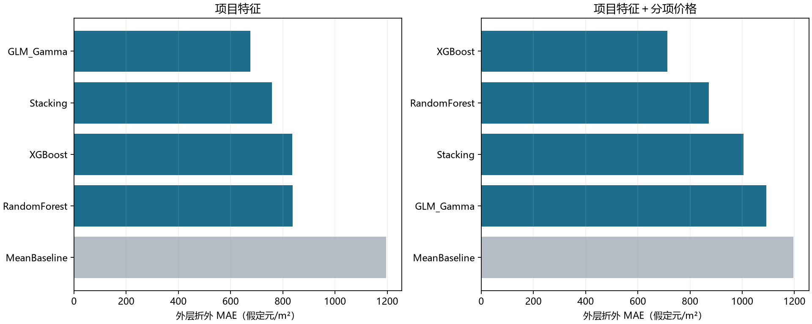
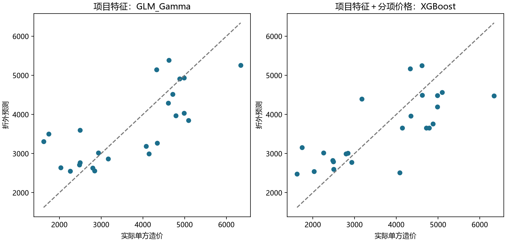

24 个有标签项目，两种预测场景，四种回归模型及均值基准。主指标 MAE 越低越好，R² 越高越好。
外层 6 折、每折 4 个验证样本；内层 3 折按 MAE 选参数。以下指标汇总全部 24 个折外预测，每个项目只作一次外层验证。没有额外独立测试集，当前结果用于探索性比较，模型选择后的部署误差仍需新增项目检验。
| 场景 | 模型 | MAE | RMSE | MAPE (%) | R2 |
|---|---|---|---|---|---|
| 项目特征＋分项价格 | XGBoost | 712.348 | 857.779 | 21.230 | 0.541 |
| 项目特征＋分项价格 | RandomForest | 871.595 | 1015.620 | 27.133 | 0.357 |
| 项目特征＋分项价格 | Stacking | 1004.268 | 1134.908 | 32.993 | 0.197 |
| 项目特征＋分项价格 | GLM_Gamma | 1092.837 | 1234.479 | 33.493 | 0.050 |
| 项目特征＋分项价格 | MeanBaseline | 1196.621 | 1312.603 | 39.490 | -0.074 |
| 项目特征 | GLM_Gamma | 675.049 | 840.135 | 22.547 | 0.560 |
| 项目特征 | Stacking | 758.597 | 930.643 | 27.501 | 0.460 |
| 项目特征 | XGBoost | 836.291 | 1089.600 | 28.432 | 0.260 |
| 项目特征 | RandomForest | 838.227 | 1056.140 | 27.291 | 0.305 |
| 项目特征 | MeanBaseline | 1196.621 | 1312.603 | 39.490 | -0.074 |


{
"excluded_without_target": [
{
"Excel行号": 27,
"项目名称": "广州办公楼1.17"
}
],
"area_issues_preserved": [
{
"Excel行号": 20,
"项目名称": "广州商住楼",
"总面积减地上地下面积": -0.6799999999966531
}
]
}面积不一致处保留原值，不自动更改。模型已用全部 24 个有效样本重训并保存，使用方法见项目 README。